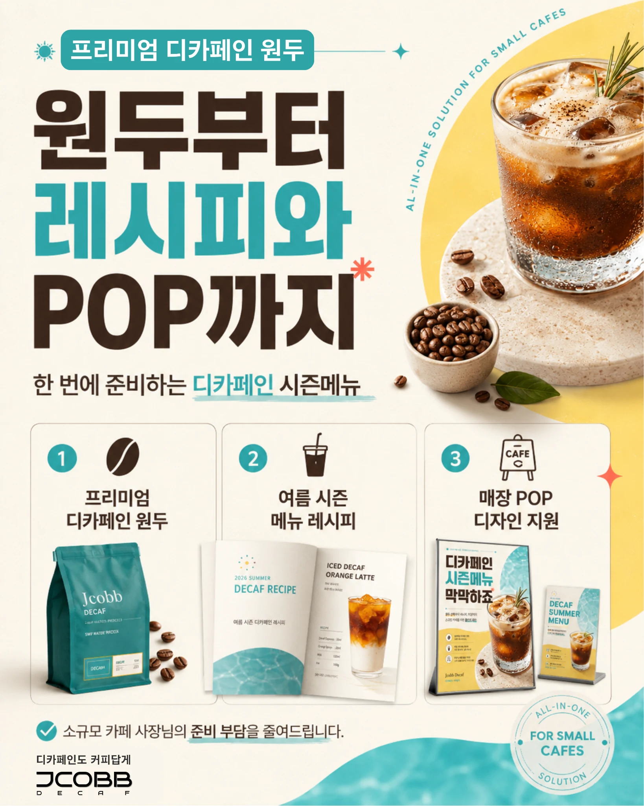
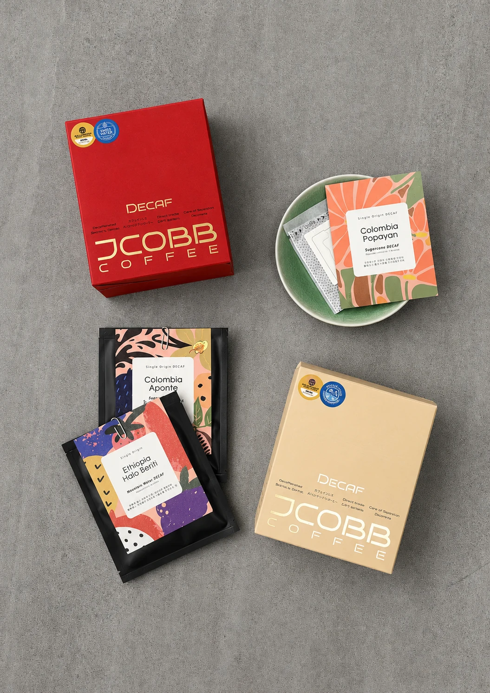

1
프리미엄 디카페인 원두
카페인 부담은 낮추고, 아메리카노·라떼·샤케라또까지 활용 가능한 디카페인 원두를 제안합니다.
JCOBB DECAF는 소규모 카페가 부담 없이 디카페인 메뉴를 시작할 수 있도록 프리미엄 디카페인 원두, 시즌 메뉴 레시피, 매장 홍보용 POP를 함께 제공합니다.

광고를 보고 들어온 카페 사장님이 가장 먼저 알아야 할 핵심 혜택입니다.
카페인 부담은 낮추고, 아메리카노·라떼·샤케라또까지 활용 가능한 디카페인 원두를 제안합니다.
소규모 카페에서도 바로 적용할 수 있는 실전형 디카페인 시즌 메뉴 레시피를 제공합니다.
카운터 안내 POP, 시즌 메뉴 포스터, 인스타그램 이미지까지 고객에게 알릴 수 있는 소재를 지원합니다.

테스트빈 신청 시 원두 상담과 시즌 메뉴 레시피, POP 활용 방향을 함께 안내드립니다.